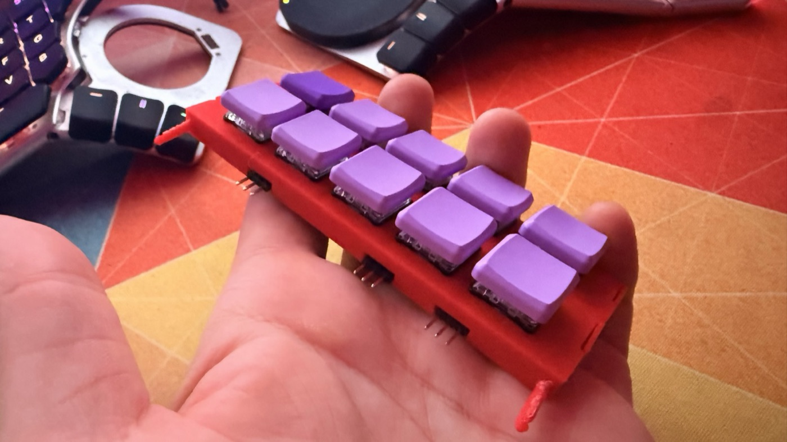
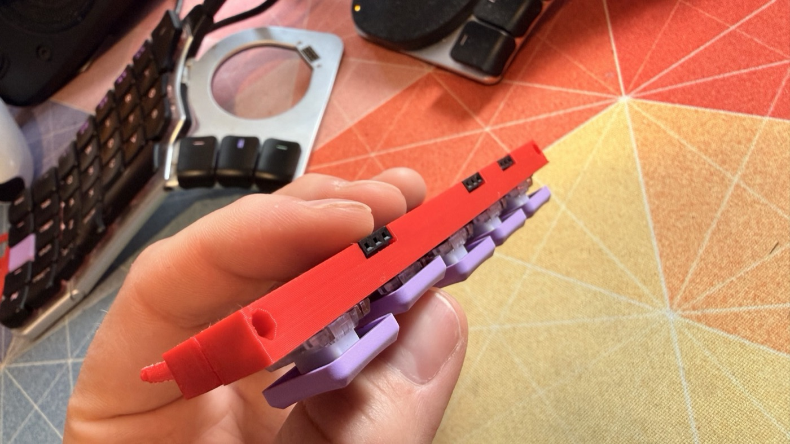
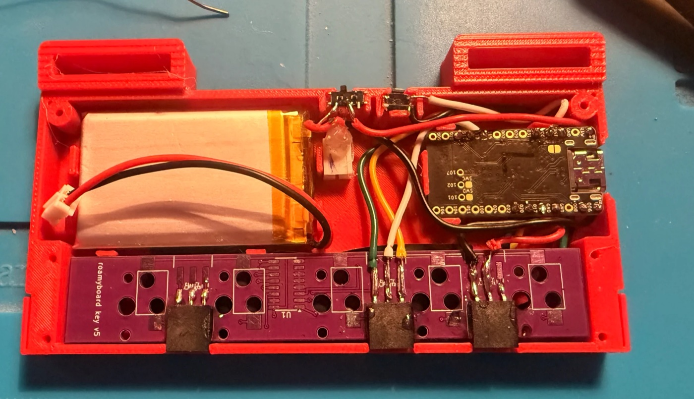
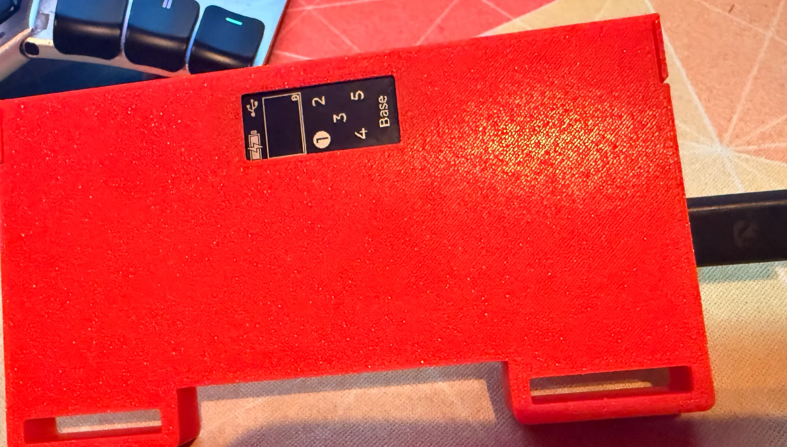

A half is a row of modules
A terminator module at one end, any number of key modules, and the MCU module at the other end with the nice!nano, battery and display. A split keyboard is two halves; a unibody keyboard is one.
The Roamyboard is a keyboard you wear on your leg, so you can type while you walk as well as while you sit. It is made of printed modules that click together side by side, and it curves around your thigh.
Drag to orbit and drag the slider to add key modules. The 3D view is generated from the same model that the parts print from.
Nevyn thinks better when he is moving, so he wants to code while he walks. That needs an input method that works on the move: a keyboard that stays put on his leg instead of on a desk. The Roamyboard is the latest of several attempts since 2012.
A terminator module at one end, any number of key modules, and the MCU module at the other end with the nice!nano, battery and display. A split keyboard is two halves; a unibody keyboard is one.
At each joint, a module's header pins slide into its neighbour's sockets and its guide pins into the neighbour's guide holes, and a tooth on each flap clicks into a notch. No tools, no cables between modules.
Every key module adds a shift register to the chain, and the terminator module ends it. The MCU module reads the chain, so ZMK knows how many key modules are attached. Pull one off while it runs and the keys move to their new places.




Pick the halves, key modules, curve, case colour, switches and keycaps, and see what each part costs. The order goes to Nevyn as an email, and he builds it by hand.
Configure yours →The assembly guide covers printing, soldering, assembling, flashing and testing a half, step by step, with a parts list and 3D views of every module.
Read the guide →The default keymap, layer by layer, drawn as the two halves of modules that type it. It changes with the number of key modules per half.
Browse the layers →This is a hobby project, not a shop. Nevyn builds these one at a time, on evenings. Everything is open: the case model, the boards, the firmware and these pages are on GitHub.